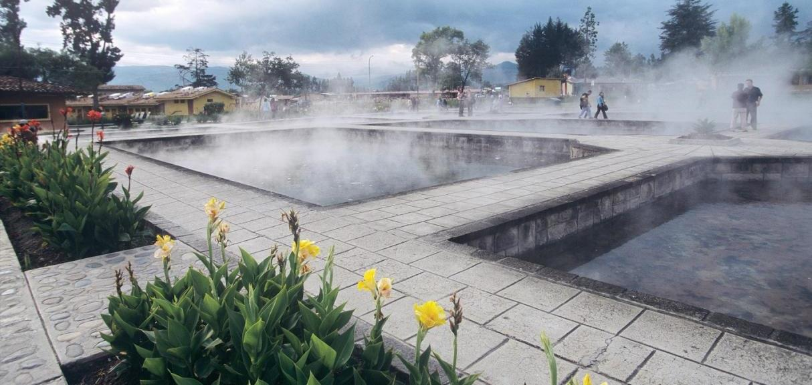
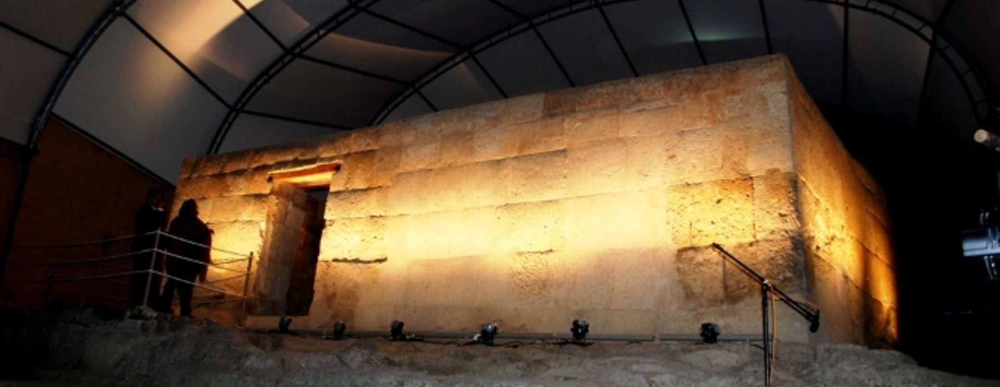

El distrito de Baños del Inca es uno de los doce que conforman la provincia de Cajamarca ubicada en el departamento de Cajamarca en el Norte del Perú. El distrito es conocido por sus aguas termales. Se encuentra a 6 km de la ciudad de Cajamarca. Desde el punto de vista jerárquico de la Iglesia católica forma parte de la Diócesis de Cajamarca la cual a su vez, pertenece a la Arquidiócesis de Trujillo.

El Cuarto del Rescate es una edificación incaica ubicada en la ciudad de Cajamarca, Perú. Sus dimensiones son 11,80 m de largo, 7,30 m de ancho y 3,1 m de alto. Este recinto es considerado por los historiadores peruanos el lugar donde se mantuvo prisionero al Sapa Inca Atahualpa, que pasó los últimos días de su vida recluido en él, concretamente entre el 16 de noviembre de 1532 y el 26 de julio de 1533, tras ser capturado por los conquistadores españoles.
Esta ubicado 20 Km. al suroeste de Cajamarca y a una altitud de 3500 metros sobre el nivel del mar. Se trata de una zona arqueológica rodeada de un pintoresco paisaje que alberga numerosas formaciones geológicas en forma de bosque de piedras o farallones, siendo las formas más conocidas las que semejan siluetas de frailes en silenciosa procesión, razón por la cual estas formaciones rocosas han adquirido el apelativo de “fraylones”. El complejo turístico comprende: